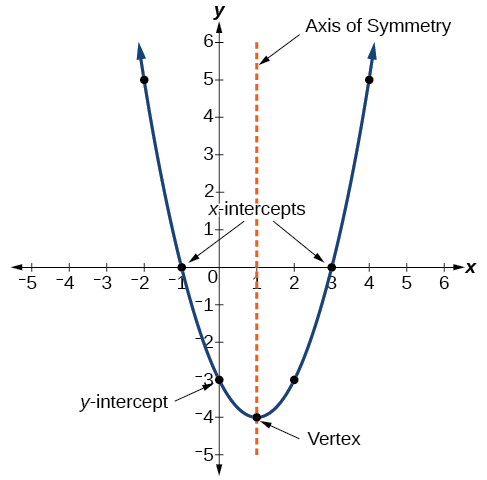

Functions are mathematical statements that contain at least one input and one output. Each input value of x, zero or non-zero, has exactly one value as its output. Quadratic Functions follow the rules of both Quadratic Equations and Regular Functions.

Both General and Standard Forms can equally describe the same Quadratic Function.
Both forms follow the rules where a is a real number, does not equal to 0, and defines how the parabola opens when it is a positive or negative number.
If a > 0, the parabola opens upward; otherwise if a < 0, the parabola opens downward.
The General Form is presented as the following:
In this form, solving a Quadratic Function can be the same as a Quadratic Equation. You can use the Quadratic Formula to solve for the x-intercepts.
The Standard Form is presented as the following:
With the vertex determined by (h, k), you can use the Standard Form to see how the graph is transformed from the graph of y = x².
You can determine a graph’s equation using the Standard Form, with the graph as a transformation of y = x². Using the x and y coordinates of any point on the curve as a substitution for x and f(x) respectively,
you can solve for the a value, otherwise known as the stretch factor.
You can expand the Standard Form to write the function into its General Form.
To find the vertex of a Quadratic Equation using its General Form, use the values of a, b, and c to find the x and y-coordinates of the vertex.
Given example:
To find the x-coordinate, use the same formula from finding the Axis of Symmetry: h = -(b/2a).
To find the y-coordinate, use the formula k = f(h), where h can be substituted by the solved x-coordinate.
Final Coordinates: (3, -2)
©2024 by Christian Robert L. Daquipil